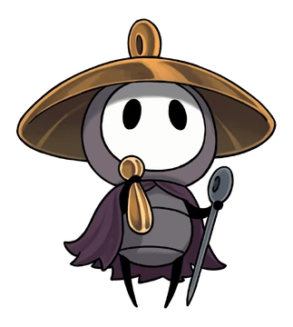
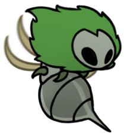

Hornet did fight the Knight in the original HollowKnight before reuniting with the knight and helping him in a boss battle and in this game the knight appears at the end to help Hornet. The They also run into Sherma multiple times. Usually Sherma's path is blocked and you end up helping them get through to where they need to go. You also befriend the Bell Beast after you fight them and win. More about the bell beast below
Mossgrubs are crawling, caterpillar-like creatures that are covered in spikes. They wander aimlessly or stay still on floors or walls. If attacked while still, they begin to wander.
Mossmir hovers aimlessly and flies towards people. Once overhead, it stabs directly downwards before flying back into the air.

Moss Mother is a boss appearing in the Ruined Chapel at the end of Moss Grotto. Moss Mothers are fully-grown Mossmirs, and are native to the Moss Grotto
Skullwings have no attacks and hover in one spot.
Kiliks crawl back and forth on ceilings and floors. When approached they alternate between briefly extending its invulnerable spikes and retracting them. Kiliks can often be found in narrow tunnels where their spikes completely block passage. They can be briefly attacked when their spikes retract, but it may be easier to use ranged weapons.
Marrowmaws cry out before rolling into a ball and charging at whoever they see
Beastflies moves towards whoever they see and then charges horizontally in a straight line. Beastflies may collide with the environment or with each other when charging.
Hokers hover idly. When hit, they shoot sharp spines straight out from their body, which continue travelling until they hit Hornet or the environment. After a few moments, additional spines will appear facing new directions. When defeated, the Hoker will shoot one last volley of spines before dying.
The Bell Beast is initially found in The Marrow, where she is trapped in Silk. After her defeat, the Bell Beast allows Hornet to ride her and acts as the game's fast travel system. The Bell Beast also drops the first Silk Heart which takes Hornet into a Silk dream when she collects it.